To Face The Bullets
"To Face the Bullets" is a strategy game with action combat centered around a fictional nation's war and revolution. Credits to D.J. Peters for his FBSound and FBTrueType libraries.

Screenshots
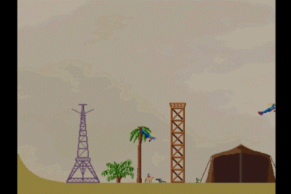
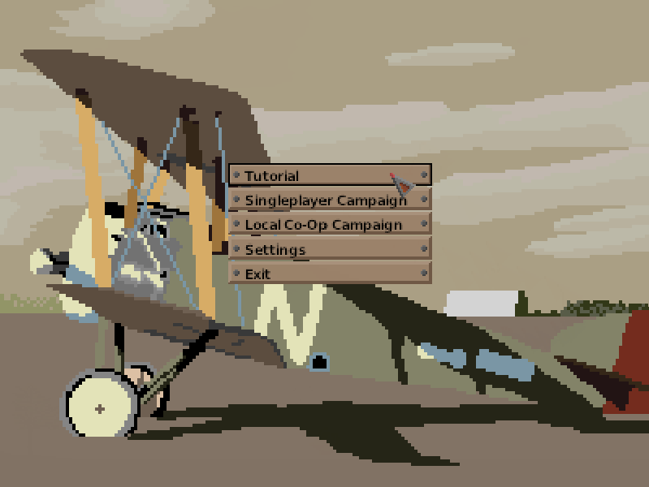 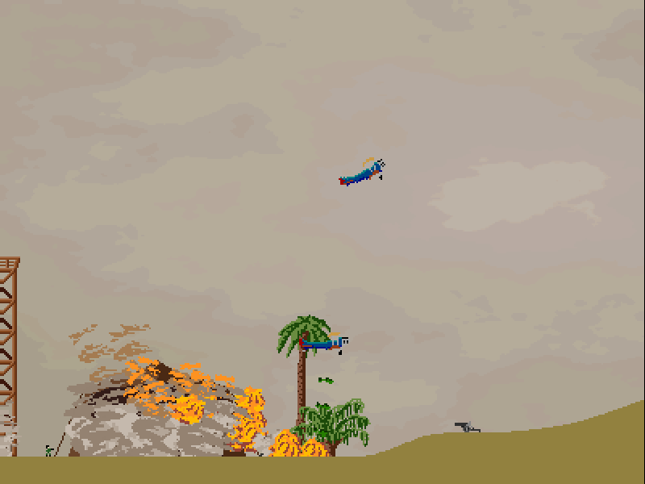
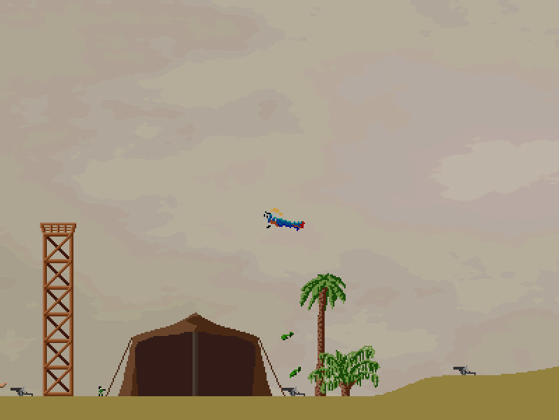 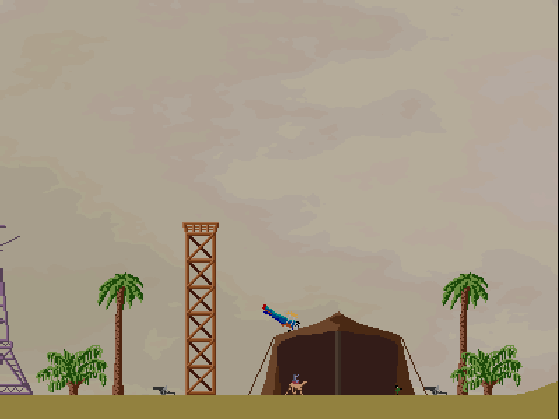
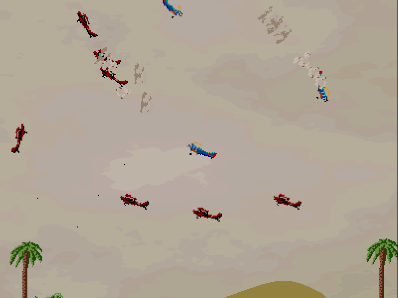 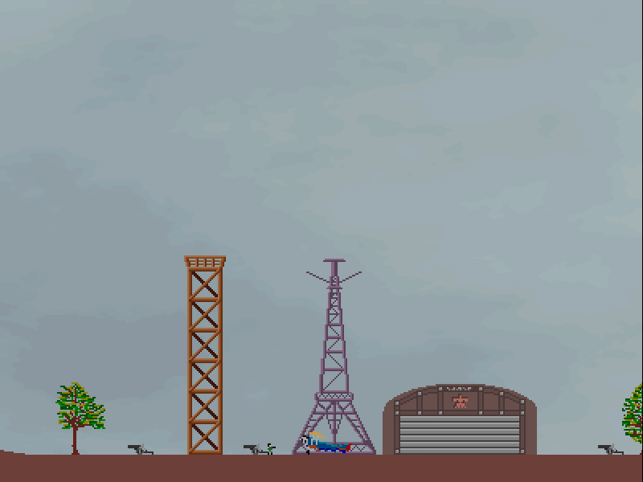
"To Face the Bullets" is a strategy game with action combat centered around a fictional nation's war and revolution. Credits to D.J. Peters for his FBSound and FBTrueType libraries.
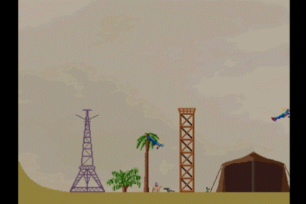
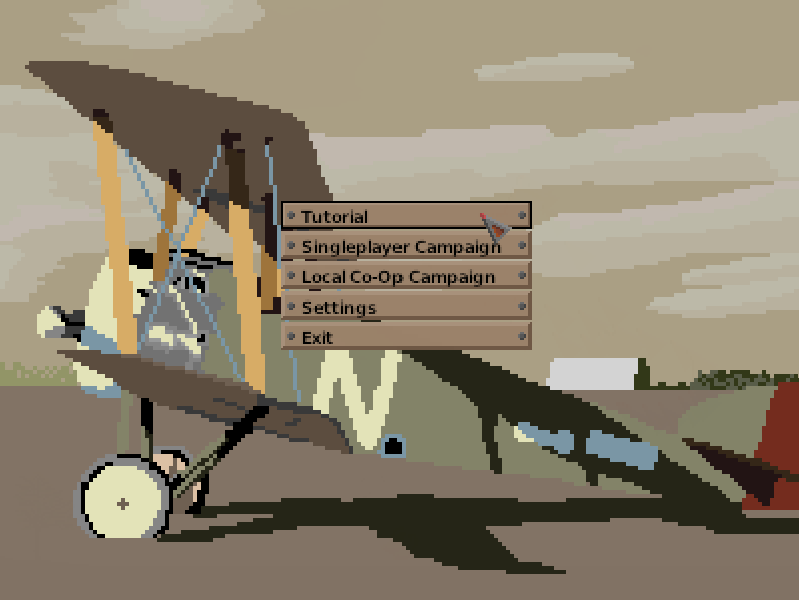 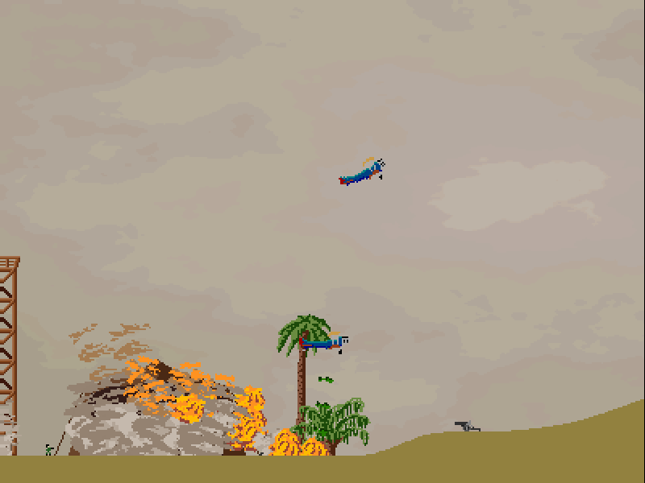
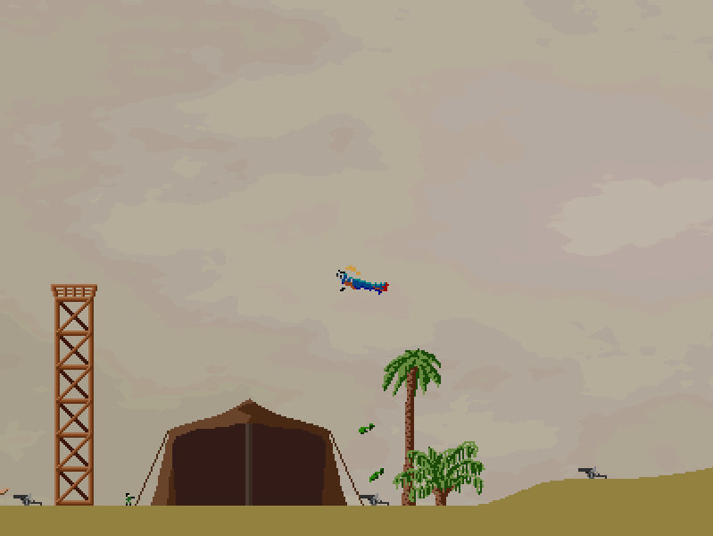 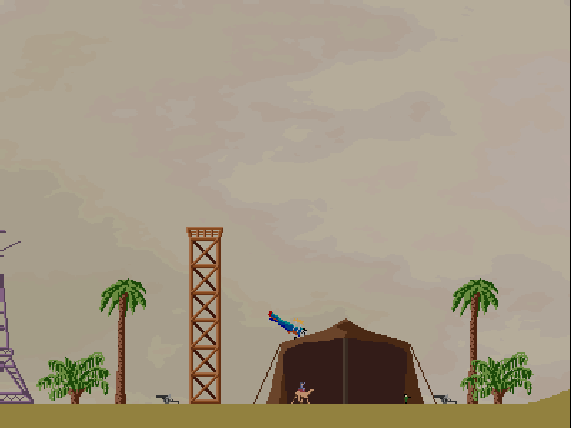
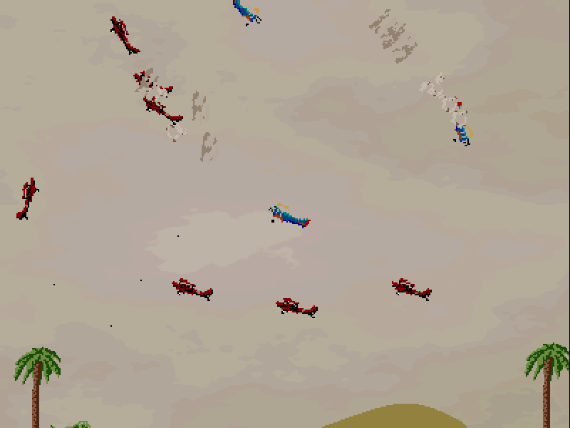 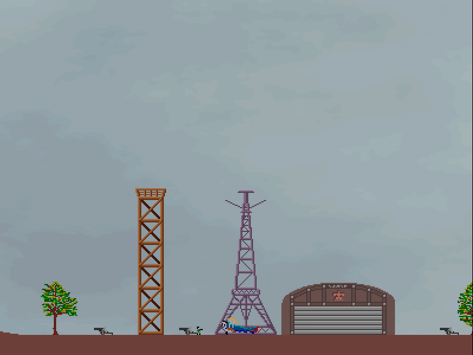